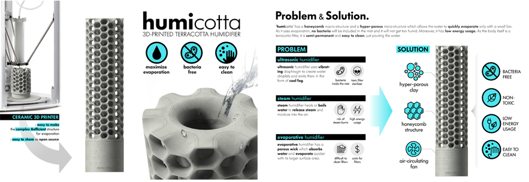

주제별 연구성과
주제별 연구성과
KAIST RESEARCH ACHIEVEMENTS
휴미코타: 세라믹 3D 프린팅을
통한 가습기 디자인
산업디자인학과 배상민
요약
휴미코타(HUMICOTTA)는 제6차 나눔프로젝트를 위하여 개발된 제품으로, 3D프린터로 제작된 세라믹 가습기이다. 휴미코타는 가습을 극대화 시켜주는 필터 부분, 내장형 팬이 있는 베이스 받침대로 구성되어 있으며, 필터 내부 실린더 공간에 담긴 물이 다공성의 필터로 흡수되며 이를 하단 팬에서 불어온 바람으로 증발시켜 공기를 가습 시키는 원리이다. 휴미코타의 필터는 규조토의 재질 특성과 벌집구조의 형태 특성을 결합한 다공성 구조로 가습에 최적화되어 있다. 주원료인 규조토는 미세한 다공질의 천연 소재로 수분 흡수력이 매우 뛰어나며, CAD프로그램 연산을 통하여 구조의 안정성을 유지하면서도 표면적을 극대화 시킬 수 있는 벌집 구조를 디자인하였다. 기존 세라믹 성형 방법으로는 제작할 수 없는 다공성의 벌집구조형태를 제작하기 위하여 세라믹 3D 프린터를 활용하였으며, 이를 보다 적극적으로 활용하여 사용자가 직접 디자인하여 제작할 수 있는 개방형 플랫폼 서비스를 제공하여 언제 어디서나 사용자가 3D프린터를 통해 자신의 공간에 적합한 가습기를 제작할 수 있도록 하였다. 이에 휴미코타는 기존 가습기들의 가습기 살균제 및 박테리아, 고전력 요구, 필터 교체 비용에 대한 우려 없이 쉽게 관리할 수 있으며, 높은 에너지 효율성을 가진 반영구적으로 사용가능한 새로운 형식의 가습기로 활용될 수 있다.
연구배경
진동을 통해 미세하고 차가운 공기를 내뿜는 기존 초음파식 가습기는 박테리아나 유독한 가습기 살균제에 대한 취약점이 있으며, 가열식 가습기 또한 뜨거운 공기에 의한 화상위험과 큰 전력 소모라는 문제점을 가지고 있다. 이를 대체하는 자연식 가습기는 청결히 관리하기 어렵고 필터 교체를 위한 유지비가 많이 든다는 단점이 있다. 이러한 사용상의 어려움을 보완하여 본 연구 에서는 박테리아나 독성물질에 대한 위험없이 저전력으로 사용할 수 있는 세라믹 3D 프린팅기반 가습기(휴미코타)를 개발 하였다.

연구내용
휴미코타는 가습을 극대화 시켜주는 필터 부분과 내장형 팬이 있는 베이스 받침대로 구성되어 있으며, 필터 내부 실린더 공간에 담긴 물이 다공성의 필터로 흡수되며 이를 하단 팬에서 불어온 바람으로 증발시켜 공기를 가습 시키는 원리이다. 이를 위해서는 흡습성이 높은 소재와 표면적을 극대화한 형태가 매우 중요하다. 소재적 측면에서 규조토는 미세한 다공질의 흙으로 흡수와 방출이 매우 뛰어난 천연소재로, 재질적 특성에서 착안하여 가장 가습 효과가 뛰어나면서도 안정된 형태를 유지할 수 있는 원료의 배합을 테스트를 통해 도출해 내었다. 또한 표면적을 극대화할 수 있는 형태를 구성하기 위해 알고리즘 베이스의 3D CAD프로그램 연산을 통하여 구조의 안정성을 유지하면서도 표면적을 극대화 시킬 수 있는 벌집 구조를 도출 하였다. 이와 같은 다공성 구조의 필터 하단부에서 팬을 돌리면 매우 낮은 전력으로도 높은 가습 효과를 가질 수 있다. 상용 가습기와의 성능 테스트 결과, 가열식 가습기 대비 전기소모량은 8배 적었으며 자연식 가습기와 비교하여 효과 면에서 월등한 가습력을 확보하였다.
기대효과
- 본 구조는 몰드 방식의 전통적인 세라믹 성형방법으로는 제작이 어려우며 이를 효과적으로 제작하기 위하여 세라믹 3D프린터를 활용하였다. 제작을 위해 3D프린터를 이용한 것에서 더 나아가, 누구나 접근 가능한 온라인 오픈 플랫폼을 함께 개발하여 사용자가 웹이나 모바일 플랫폼에 접속하여 가습기를 사용할 환경의 데이터를 입력하면 최적의 휴미코타 형태를 확인할 수 있고, 이를 3d프린터를 통해 쉽게 만들 수 있다. 3D프린터가 보다 상용화/개인화 되는 시점에서 활발한 사용자 중심의 디자인이 진행될 수 있을 것으로 기대된다. 본 제품은 6차 나눔프로젝트를 위하여 개발된 상품이다. 2006년부터 시작된 나눔프로젝트는 새로운 상품 개발을 통해 자선활동을 펼치는 인도적 사회 순환 시스템을 창조 하는 것을 목적으로 한다.국제구호개발기구 월드비전과 카이스트 ID+IM디자인 랩이 각자의 능력을 기부하고 협력 하여 수익금 전액을 저소득층 어린이의 교육을 위해 기부하는 사업이다. 휴미코타의 소재적, 형태적 혁신을 통하여 지속가능한 삶과 환경에 기여하는 것과 더불어, 그 수익을 통해 저소득층 어린이들이 또 다른 기부의 주체로 자라날 수 있도록 돕는 밑거름이 될 수 있도록 돕는 사회적 기여를 함께 도모하고 있다. 이에 대한 가치를 인정받아 미국 IDEA 어워드에서 은상을 수상하였으며, 앞으로 쾌적한 환경 조성과 많은 아동들에게 평등한 교육의 기회를 제공 하는 데에 큰 역할을 수행할 것으로 기대 된다.
연구성과
국제성
[수상] 국제디자인어워드 IDEA 2017 / SILVER AWARD 단독 수상
[전시] 미국산업디자이너협회 주관 IDSA 2017 Conference / 전시 및 발표
[홍보] 세계적 권위의 디자인 매거진 INNOVATION MAGAZINE / HOME & BATH 부문에 수록
국내성과
[홍보] 경향신문 지면보도 외 10여 건
- 경향신문 지면보도 <국제 디자인 공모전서 4개 부문 동시 수상> 2017.09.14.
- YTN 방송보도 <카이스트 배상민 교수, IDEA 4개 상 획득> 2017.09.15.
사회환원
- 휴미코타의 수익은 월드비전과 ID+IM LAB의 협력으로 진행하는 <나눔 프로젝트>의 기반이 됨
- <나눔 프로젝트>를 통해 17억원의 나눔자산을 마련하여 167명 청소년들의 꿈 지원비로 기금을 조성함